Home |
Students |
Teachers |
Schedule |
About |
A check-in system, keeping track of the students' and the teachers' absences and current room locations.
Each student and teacher is given an unique RFID card, which they check upon entry in each room. From there depending on the time of entry you are marked as late, attended or unattended. All of the info is then presented in the site.
